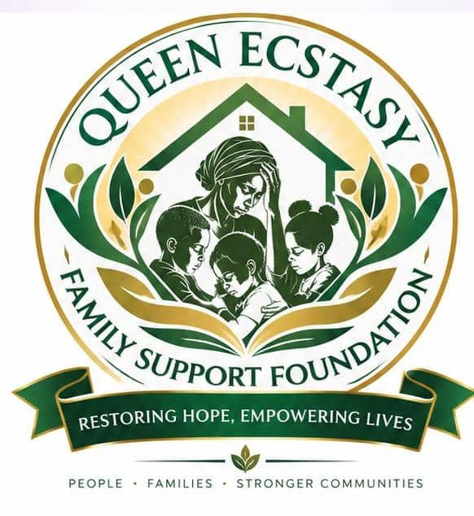

Through targeted community outreaches, Queen Ecstasy Family Support Foundation takes relief directly to doorsteps, royal palaces, and grassroots settlements — delivering emergency food items, empowerment resources, and psychosocial encouragement to young widows, vulnerable mothers, and needy children.
In an inspiring humanitarian demonstration, Queen Ecstasy Family Support Foundation led by Founder Queen Esther Chukwumaeze mobilized to the Chief's Palace at Ijayapi, situated across Biaji in Kubwa, Abuja. The outreach began with an official royal audience with the traditional leaders, receiving their royal endorsement and blessings for the foundation's compassionate community work.
The team distributed comprehensive food packages, essential household staples, and provided one-on-one psychological counseling, spiritual support, and empowerment registration for young widows and struggling families in the community. Through this direct engagement, dozens of households received emergency assistance, restoring dignity and smiles to faces that had long felt forgotten.
Beneficiaries Reached
Relief Packages Distributed
Royal Blessing & Community Backing
Identified for Ongoing Support
Arrival and welcome by elders and council at Chief Palace Ijayapi, Biaji across Kubwa.
Distributing emergency food packages and essential provisions to gathered widows.
Founder Queen Esther Chukwumaeze uplifting the women with empowering words and prayers.
Heartfelt reactions, gratitude, and testimonials from local community mothers.
Concurring remarks, chief's blessings, and group photo session at the Palace ground.
Our mission is continuously expanding across grassroots communities in Abuja (FCT), Imo State, and underserved areas throughout Nigeria. We welcome community leaders, churches, local chiefs, and philanthropists to nominate or co-sponsor vulnerable settlements for our next relief intervention.